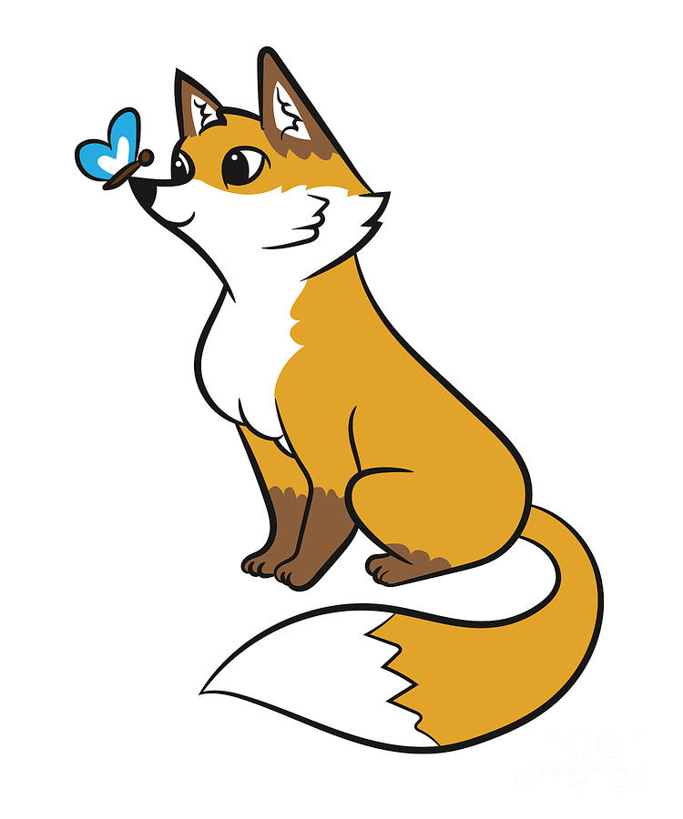

Hi! My name is Avigail.
One of my very favorite things on the whole trip was going snorkeling. There were so many colorful fish 🐠🪸 in the water swimming everywhere, all around me! I even saw a big sea turtle taking a nap, and when I got out the captain let us feed the sharks. 🦈 I want to go snorkeling again sometime. It was so so fun.
The most important thing you should know about me is 🦊 my favorite animal is a fox 🦊. I saw one once and he was so cute. I have Momma Fox and Kid Fox and Baby Fox stuffiies, but Momma Fox was too big to come on our trip and I lost Baby Fox. So Kid Fox is my only fox right now.

In Japan, the Samurais had three tailed foxes. We went to a Samurai museum in Berlin that had foxes everywhere! Then, in Japan, there were still foxes everywhere! I made sure to get a picture with each one.


There's something that has been bothering me. What is the difference between a country and a state? I don't get it. California is not a country? But Japan is? And is Europe a country? It just doesn’t make sense.


Another important thing about me is that I really love my mom a lot. I like making her cards that say, “I LOVE MOM” and sometimes "I LOVE MOM AND DAD." Since I can't read yet, I spent a lot of time on our trip making cards.
Now you know all the most important things about me. Oh, I forgot to tell you. I hate hikes. I know I smiled for the pictures, but I really do hate them.
I hope you liked seeing my 🦊 fox pictures. 🦊
- Love, Avi
